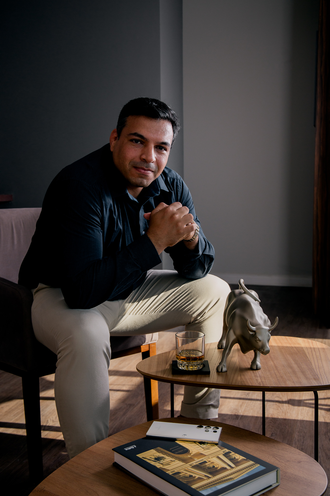

About Me
From Experience to Strategy
I’m Carlos Ribeiro — a Commodities Advisor, Export Strategy
Consultant, entrepreneur, and lifelong student of business,
technology, and international markets.
My career has never followed a straight line. And I believe that is
one of my greatest strengths.
I started my professional journey in the Brazilian military, an
experience that taught me discipline, responsibility, leadership, and
the importance of making decisions under pressure.
From there, I entered the maritime and hospitality industries, working
aboard international vessels and living in an environment where
different cultures, languages, personalities, and expectations came
together every day.
Those years gave me something that no classroom could provide: a
global perspective.
I later moved into entrepreneurship, building and managing businesses
in hospitality, marketing, real estate and international trade.
Each experience added another layer to the way I understand business —
from managing people and operations to understanding customers,
investments, sales, positioning, and financial decisions.
Eventually, I found my strongest professional direction in
international trade and commodities.
Commodities & International Trade
Today, my primary focus is the international commodities market.
Through Wolf Business Advisory, I work with
agricultural and energy commodities including sugar, corn, soybeans,
EN590, D6, Ethanol and other products connected to global supply
chains.
My work goes beyond introducing a buyer to a seller. I study the
commercial structure behind an operation:
product, origin, pricing, logistics, documentation, counterparties,
payment structures, risk, compliance, and execution.
I participate in international negotiations and work on FOB and CIF
transactions, strategic pricing, arbitrage opportunities, export
structures, and long-term commercial relationships.
My objective is simple:
Turn a complex transaction into a structured business
opportunity.
That requires more than market knowledge. It requires understanding
people, recognizing risks, negotiating intelligently, and knowing when
an opportunity is actually worth pursuing.
Business, Markets & Technology
My curiosity has never been limited to one field. Alongside my work in
commodities, I have continuously studied financial markets,
derivatives, investment strategies, programming, artificial
intelligence, APIs, databases, blockchain, and automation.
I’m particularly interested in the intersection between
technology and international commerce.
I believe the next generation of trading and export businesses will
increasingly combine human relationships and negotiation with data,
automation, artificial intelligence, and digital infrastructure.
That is why I continue learning and building.
Not because technology is fashionable, but because I believe it should
solve real business problems.
A Global Mindset
International business has also shaped the way I communicate and
think.
I work across different cultures and have developed experience with
international clients, suppliers, traders, and business partners.
I speak Portuguese and English professionally and have studied
Spanish, Italian, Turkish, and other languages throughout my
journey.
For me, language is more than communication.
It is a way of understanding how people think, negotiate, build trust,
and do business.
What I Believe
I believe that strong businesses are built on three foundations:
Discipline. Execution.
A good opportunity means very little without a reliable counterparty.
A good negotiation means very little without proper structure.
And a signed contract means very little without the ability to
execute.
That is why I approach business with both a commercial and analytical
mindset.
I look at the opportunity, but I also look at what can go wrong.
I look at the price, but I also look at the entire chain behind it.
I look for growth, but I believe sustainable growth must be built on
relationships that can survive more than one transaction.
What Comes Next
I’m still learning, still building, and still expanding.
My goal is to continue developing Wolf Business Advisory and to build
new bridges between
international trade, commodities, finance, and technology.
I want to participate in businesses that are not simply profitable
today, but capable of becoming stronger, more efficient, and more
valuable over time.
After more than two decades of professional experiences across
different industries and environments.
I’ve learned one important lesson:
"Gives you perspective."
Knowledge gives you tools.
But execution is what creates results.
And that is where I choose to focus.
Build. Negotiate.
Execute. Grow.
